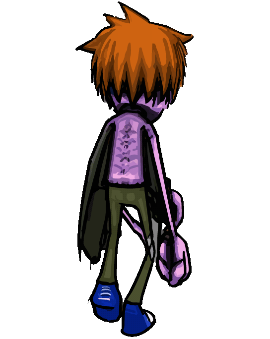

Videography 101
A videography project.
BONJOUR, HOLA, GREETINGS, WELCOME TO MY CREATIVE PORTFOLIO AND MINDSCAPE!
A videography project.
A creative design project.
A videography project.

This Halloween, dress up as your favorite characters from the hit gaming series "Charlie-Murder". The best costume wins $100!

"Zombie-Charlie"
"Kelly"

"Lester"
"Rex"